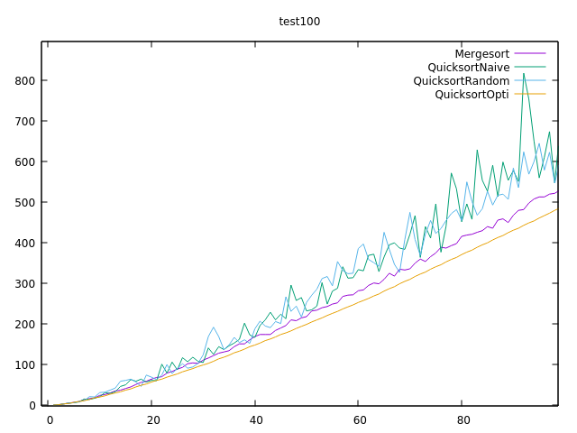

Quicksort¶
Etat du TP¶
Décrivez ici l’état d’avancement du TP.
Réponses aux questions¶
Rappel sur le tri rapide¶
Question 1¶
Il existe le tri par insertion et le tri à bulle comme tri sur place.
Question 3¶
On verifie que tous les élements à gauche sont bien inférieur à la valeur du pivot et à droite supérieur au pivot.
Question 9¶
L’espace mémoire utilisé pour une liste de taille n est Quicksort(p)+Quicksort(n-p)+P(n) P(n) représente l’espace mémoire utilisé pour partition qui varie de 1 à n-1 car la boucle prend fin quand i>=j donc on dépend de la position du pivot qui se trouve entre 1 et n ainsi sa complexité est Θ(n). T(p) représente la tranche 1 de taille p et T(n-p) représente la tranche 2 de taille n-p avec p la position du pivot. On a donc au final : QuickSort(n)=QuickSort(p)+Quicksort(n-p)+Θ(n)
Pivot Aléatoire¶
Question 4¶
On remarque d’après les moyennes ci-dessous que les quicksorts font plus de comparaison que le mergesort. Mergesort=238,68 Naive_Quicksort=278,44 Random_Quicksort=288,9
Question 5¶
Le tri rapide permet de rester sur la même liste sans devoir en créer une nouvelle et ainsi demandé plus de mémoire
Question 6¶
Dans ce cas la différence est dû au fait que 0 est le plus petit nombre de la liste donc la liste change en la mettant dans l’ordre décroissant.
Question 7¶
Le pire des cas est lorsque la liste se coupe en deux parties inégales, par exemple dans une liste de taille n la tranche 1 est de taille 1 tandis que pour la tranche 2 n-1
Pour résoudre l'équation de récurence on remplace p par 1 ou par n-1 ici on remplacera par 1 Quicksort(n)=Quicksort(1)+Quicksort(n-1)+Θ(n).
Or Quicksort(1) = 1.
On a donc Quicksort(n)=Quicksort(n-1)+1+Θ(n)=(1+Θ(n)+Θ(n-1)+1+....+Θ(n-j)+1)+Quicksort(n-j).
Ici on a n fois ce qui se trouve entre parenthèse et j=n-1 donc Quicksort(n-j)=1
On a alors n*(Θ(n)+1)+1 ce qui nous donne au final Θ(n^2)
Dans ce cas la complexité est de O(n^2).
Pivot optimal¶
Question 1¶
La meilleur valeur pour le pivot sera le valeur qui se trouvera au milieu de la tranche triée.
Question 4¶
D’après le graphique si il s’agit du meilleur cas il y a moins de comparaison que mergesort. Le meilleur est lorsque les deux tranches ont la même longueur.
{kind=link}
Question 5¶
Pour résoudre l’équation on remplace p par n/2
On a alors Quicksort(n) = 2Quicksort(n/2)+Θ(n)
On a une équation de la forme c(n)=a*c(n/b)+f(n)
avec f(n)=Θ(n)
on a alors
Quicksort(n)=Θ(n^log2(2))log(n)) soit Θ(nlog(n))
Dans ce cas la complexité est de Θ(nlog(n))